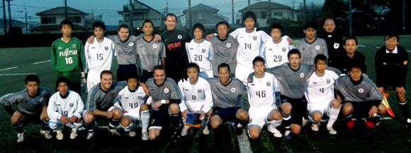

|
YC&AC Saturday 5th December.
Kawasaki Frontale U-18 produced a great performance culminating in a thoroughly deserved 2-0 victory over YC&AC 1st team in the newly-established Bay City Christmas Cup on a rainy Saturday evening.
Two goals in the second half put paid to the challenge of YC&AC, who battled bravely but were ultimately outclassed by a scintillating young side. In truth however, with a game scheduled against Sanfrecche Hiroshima U-18 in the J-Club Youth Tournament next weekend, this game meant more than just a friendly match for Frontale as theyprepared themselves for the upcoming tournament.
To their credit, YC&AC never allowed their heads to drop. Several free kicks from Anthony Savage did come close to goal during the game while a 25 yard shot from outside the box by Joe Takeda in the 80th minute could only be watched by Frontale's goalkeeper as it hit the bar.
YC&AC close out their 2009 games, hosting the Hibs at home on Saturday, December 19th. Kick off is set for 19:10.

Report by Joe Takeda
|